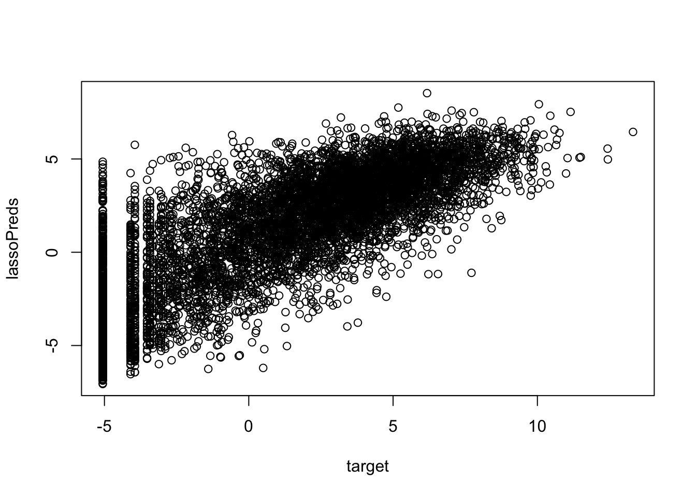

Do this at the beginning of the lab
install.packages("caret", dependencies=T)
install.packages(c("randomForest", "glmnet"), dependencies=T)require(caret)## Warning in library(package, lib.loc = lib.loc, character.only = TRUE,
## logical.return = TRUE, : there is no package called 'caret'require(randomForest)
require(glmnet)## Warning in library(package, lib.loc = lib.loc, character.only = TRUE,
## logical.return = TRUE, : there is no package called 'glmnet'fullFeatureSet <- read.table("http://seandavi.github.io/ITR/expression-prediction/features.txt");
target <- scan(url("http://seandavi.github.io/ITR/expression-prediction/target.txt"))You can see the full list of features in fullFeatureSet using:
colnames(fullFeatureSet)## [1] "Control" "Dnase" "H2az" "H3k27ac" "H3k27me3" "H3k36me3"
## [7] "H3k4me1" "H3k4me2" "H3k4me3" "H3k79me2" "H3k9ac" "H3k9me1"
## [13] "H3k9me3" "H4k20me1"In this section, we will run the lasso procedure.
features <- fullFeatureSetlibrary(caret)
#how to split into train/validation using cross-validation
fitControl <- trainControl(
method="repeatedcv",
number=10,
## repeated once
repeats=1,
verboseIter=T)We are going to try a number of different models, so here, we create a range of parameters to investigate.
lassoGrid <- expand.grid(alpha=1, lambda=10^seq(-6, 0, 1))Now, we train the model using cross-validation to find the “best” parameters.
lassoFit <- train(features, target, method="glmnet",
trControl=fitControl, tuneGrid=lassoGrid)## + Fold01.Rep1: alpha=1, lambda=1
## - Fold01.Rep1: alpha=1, lambda=1
## + Fold02.Rep1: alpha=1, lambda=1
## - Fold02.Rep1: alpha=1, lambda=1
## + Fold03.Rep1: alpha=1, lambda=1
## - Fold03.Rep1: alpha=1, lambda=1
## + Fold04.Rep1: alpha=1, lambda=1
## - Fold04.Rep1: alpha=1, lambda=1
## + Fold05.Rep1: alpha=1, lambda=1
## - Fold05.Rep1: alpha=1, lambda=1
## + Fold06.Rep1: alpha=1, lambda=1
## - Fold06.Rep1: alpha=1, lambda=1
## + Fold07.Rep1: alpha=1, lambda=1
## - Fold07.Rep1: alpha=1, lambda=1
## + Fold08.Rep1: alpha=1, lambda=1
## - Fold08.Rep1: alpha=1, lambda=1
## + Fold09.Rep1: alpha=1, lambda=1
## - Fold09.Rep1: alpha=1, lambda=1
## + Fold10.Rep1: alpha=1, lambda=1
## - Fold10.Rep1: alpha=1, lambda=1
## Aggregating results
## Selecting tuning parameters
## Fitting alpha = 1, lambda = 0.001 on full training setlassoModel <- lassoFit$finalModelWhat metric is being used Hint: print names(lassoFit) and get the metric used.
Printing the lassoFit variable gives the overall performance.
names(lassoFit)## [1] "method" "modelInfo" "modelType" "results"
## [5] "pred" "bestTune" "call" "dots"
## [9] "metric" "control" "finalModel" "preProcess"
## [13] "trainingData" "resample" "resampledCM" "perfNames"
## [17] "maximize" "yLimits" "times" "levels"print(lassoFit)## glmnet
##
## 8641 samples
## 14 predictor
##
## No pre-processing
## Resampling: Cross-Validated (10 fold, repeated 1 times)
## Summary of sample sizes: 7777, 7777, 7777, 7777, 7777, 7777, ...
## Resampling results across tuning parameters:
##
## lambda RMSE Rsquared MAE
## 1e-06 2.21 0.750 1.62
## 1e-05 2.21 0.750 1.62
## 1e-04 2.21 0.750 1.62
## 1e-03 2.21 0.750 1.62
## 1e-02 2.21 0.750 1.62
## 1e-01 2.23 0.744 1.64
## 1e+00 2.51 0.736 2.05
##
## Tuning parameter 'alpha' was held constant at a value of 1
## RMSE was used to select the optimal model using the smallest value.
## The final values used for the model were alpha = 1 and lambda = 0.001.print(lassoFit$resample)## RMSE Rsquared MAE Resample
## 1 2.18 0.760 1.55 Fold07.Rep1
## 2 2.20 0.753 1.61 Fold03.Rep1
## 3 2.25 0.742 1.65 Fold05.Rep1
## 4 2.19 0.752 1.62 Fold02.Rep1
## 5 2.17 0.756 1.61 Fold09.Rep1
## 6 2.30 0.723 1.69 Fold06.Rep1
## 7 2.26 0.737 1.68 Fold08.Rep1
## 8 2.19 0.765 1.60 Fold10.Rep1
## 9 2.13 0.760 1.56 Fold04.Rep1
## 10 2.19 0.752 1.63 Fold01.Rep1We can inspect the coefficients for different values of the L1 penalty lambda - play around and see what happens.
print(coef(lassoModel, s=1e-4))## 15 x 1 sparse Matrix of class "dgCMatrix"
## 1
## (Intercept) -4.4929
## Control -0.1595
## Dnase 0.4740
## H2az 0.1990
## H3k27ac -0.1992
## H3k27me3 -0.5880
## H3k36me3 0.6753
## H3k4me1 -0.0932
## H3k4me2 -0.1460
## H3k4me3 0.3357
## H3k79me2 0.6071
## H3k9ac 0.4594
## H3k9me1 -0.4166
## H3k9me3 -0.1905
## H4k20me1 0.0615print(coef(lassoModel, s=1))## 15 x 1 sparse Matrix of class "dgCMatrix"
## 1
## (Intercept) -3.6031
## Control .
## Dnase 0.3023
## H2az .
## H3k27ac .
## H3k27me3 .
## H3k36me3 0.1044
## H3k4me1 .
## H3k4me2 .
## H3k4me3 0.0343
## H3k79me2 0.5703
## H3k9ac 0.2765
## H3k9me1 .
## H3k9me3 .
## H4k20me1 .We can also plot the entire regularization path The numbers shown are the feature (column) ids - to get the name of the feature, you can do colnames(features)[10], for instance. the numbers at the top are the numbers of nonzero coefficients.
plot(lassoModel, "lambda", label=T)The final, trained model is in lassoFit. We can plot the predictions vs original targets.
lassoPreds <- predict(lassoFit, newdata=features)
plot(target, lassoPreds)
library(caret)rfGrid <- expand.grid(mtry=floor(ncol(features)/3))randomforestFit <- train(features, target, method="rf",
trControl=fitControl, tuneGrid=rfGrid,
ntree=100)## + Fold01.Rep1: mtry=4
## - Fold01.Rep1: mtry=4
## + Fold02.Rep1: mtry=4
## - Fold02.Rep1: mtry=4
## + Fold03.Rep1: mtry=4
## - Fold03.Rep1: mtry=4
## + Fold04.Rep1: mtry=4
## - Fold04.Rep1: mtry=4
## + Fold05.Rep1: mtry=4
## - Fold05.Rep1: mtry=4
## + Fold06.Rep1: mtry=4
## - Fold06.Rep1: mtry=4
## + Fold07.Rep1: mtry=4
## - Fold07.Rep1: mtry=4
## + Fold08.Rep1: mtry=4
## - Fold08.Rep1: mtry=4
## + Fold09.Rep1: mtry=4
## - Fold09.Rep1: mtry=4
## + Fold10.Rep1: mtry=4
## - Fold10.Rep1: mtry=4
## Aggregating results
## Fitting final model on full training setrfModel <- randomforestFit$finalModelThe overall accuracy is:
print(randomforestFit)## Random Forest
##
## 8641 samples
## 14 predictor
##
## No pre-processing
## Resampling: Cross-Validated (10 fold, repeated 1 times)
## Summary of sample sizes: 7777, 7776, 7777, 7777, 7777, 7777, ...
## Resampling results:
##
## RMSE Rsquared MAE
## 2.13 0.767 1.51
##
## Tuning parameter 'mtry' was held constant at a value of 4We can also look at the accuracy per cross-validation fold.
print(randomforestFit$resample)## RMSE Rsquared MAE Resample
## 1 2.14 0.758 1.52 Fold01.Rep1
## 2 2.08 0.775 1.44 Fold02.Rep1
## 3 2.08 0.780 1.48 Fold03.Rep1
## 4 2.19 0.747 1.56 Fold04.Rep1
## 5 2.10 0.776 1.49 Fold05.Rep1
## 6 2.19 0.756 1.55 Fold06.Rep1
## 7 2.11 0.772 1.51 Fold07.Rep1
## 8 2.14 0.764 1.51 Fold08.Rep1
## 9 2.23 0.753 1.56 Fold09.Rep1
## 10 2.07 0.788 1.46 Fold10.Rep1The variable importance gives a measure of the relative contributions of each of the variables (histone marks) to the expression prediction. Larger values reflect greater feature importance.
print(rfModel$importance[order(rfModel$importance, decreasing=T),])## H3k79me2 H3k9ac H3k4me3 H3k27ac Dnase H3k36me3 H3k4me2 H2az
## 32437 27788 23553 20887 14632 12402 12054 4668
## H3k27me3 H3k4me1 H3k9me1 H4k20me1 H3k9me3 Control
## 3468 3251 2827 2720 2649 2510The final trained model is in randomforestFit. Again, we can plot the predictions vs original targets.
randomforestPreds <- predict(randomforestFit, newdata=features)
plot(target, randomforestPreds)How do other models perform? You can try other models by changing the “method” parameter in the “train” call. Some suggestions for models: linear regression, “lm” and regression trees, “rpart2”.
Construct a proper test set and re-run the analyses
How do the individual histone marks contribute to the accuracy of the predictions? You can formulate hypotheses about which marks are important and only include those in the feature matrix when learning your model to see how they do. We provide some code below to help you with this.
We can experiment with the weights that lasso regression produces when given a subset of the features. First, create a column vector specifying the names of a subset of the features with:
featureSubset <- c("Control", "H3k4me1", "H3k4me2", "H2az", "H3k27me3",
"H3k36me3", "H3k9me1", "H3k9me3", "H4k20me1")Now create the variable “features” which contains this subset of features:
features <- fullFeatureSet[featureSubset]Now, rerun the lasso regression with the subset.
lassoFit <- train(features, target, method="glmnet",
trControl=fitControl, tuneGrid=lassoGrid)## + Fold01.Rep1: alpha=1, lambda=1
## - Fold01.Rep1: alpha=1, lambda=1
## + Fold02.Rep1: alpha=1, lambda=1
## - Fold02.Rep1: alpha=1, lambda=1
## + Fold03.Rep1: alpha=1, lambda=1
## - Fold03.Rep1: alpha=1, lambda=1
## + Fold04.Rep1: alpha=1, lambda=1
## - Fold04.Rep1: alpha=1, lambda=1
## + Fold05.Rep1: alpha=1, lambda=1
## - Fold05.Rep1: alpha=1, lambda=1
## + Fold06.Rep1: alpha=1, lambda=1
## - Fold06.Rep1: alpha=1, lambda=1
## + Fold07.Rep1: alpha=1, lambda=1
## - Fold07.Rep1: alpha=1, lambda=1
## + Fold08.Rep1: alpha=1, lambda=1
## - Fold08.Rep1: alpha=1, lambda=1
## + Fold09.Rep1: alpha=1, lambda=1
## - Fold09.Rep1: alpha=1, lambda=1
## + Fold10.Rep1: alpha=1, lambda=1
## - Fold10.Rep1: alpha=1, lambda=1
## Aggregating results
## Selecting tuning parameters
## Fitting alpha = 1, lambda = 0.001 on full training setlassoModel <- lassoFit$finalModelWe now generate a plot where the y axis is the coefficient of the weights assigned to the various features by lasso, the bottom x-axis is the log of the regularisation parameter lambda, and the top x-axis is the number of non-zero weights for that particular value of the regularisation parameter. The numbers on the lines correspond to the indices of the features in “featureSubset”. The numbers at the top are the numbers of nonzero betas.
plot(lassoModel, "lambda", label=T)